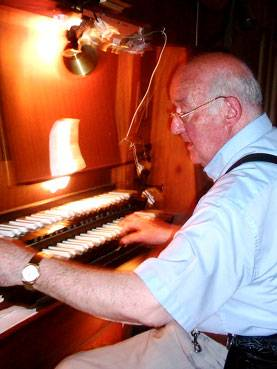

| |
Salvador
Puga i Espuña
Nat l'any 1920, començà a estudiar música
l'any 1937 amb el mestre Joan Sardà i Vila. Ens va deixar l'any 2017.
Hagué d'interrompre els estudis per a incorporar-se a files
l'any 1938/9 de la nostra guerra, que és quan cridaren
la celebre 'Quinta del Biberón', la quinta del '41.
Acabada la guerra continuà els estudis canviant de professor
i posant-se sota la tutela del mestre Joan Tomàs i Parés,
que llavors era sotsdirector de l'Orfeó Català,
amb qui estudià, ademés de piano, harmonia, contrapunt
i composició.
Fou director durant tres anys de l'Escolania de la Parròquia
de Sant Pacià i de l'Escola de Cant Gregorià de
la mateixa Parròquia. Dirigí l'Orfeó Lluís
Millet del Centre Parroquial de la mateixa parròquia durant
tres anys i actuà als centres dels Lluïsos, del Casal
i dels 'Padres' de Sant Andreu de Palomar en els espectacles musicals
que s'hi organitzaven.
Fou director de l'Orfeó L'Eco de Catalunya des del 1949
al 1995, en que ho deixà per voluntat pròpia al
cumplir 75 anys, o sigui que estigué dirigint L'Eco durant
46 anys, en els quals conduí l'orfeó col·laborant
amb la Banda Municipal de Barcelona i dotant al repertori de l'orfeó
d'obres d'autors tant importants com Bach, Beethoven, Handel,
entre d'altres i de fragments d'òperes de Puccini, Verdi,
Mascagni, Wagner, etc., així com dels nostres autors més
reconeguts com són Millet, Pérex Moia, Mas i Serracant,
Morera, Joan Tomàs, etc. Ha compost diverses sardanes,
totes elles estrenades a Sant Andreu de Palomar. |
|  |
|
Fins
a fa poc
exercia
d'organista
en les misses
que
es
celebren
a
la
Parròquia
de
Sant
Pacià. | |